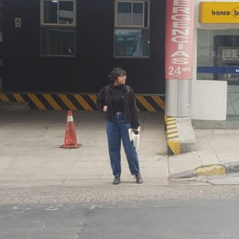

Presentación

Ana Cecilia Condarco Troncoso
"Si sientes que vas a chocar, acelera."
Mi githubSobre mí
Siempre he sido una persona curiosa. Muchas veces termino aprendiendo algo simplemente porque en
algún momento pensé: “¿y si intento hacer esto?”.
Actualmente estudio Diseño Digital y estoy descubriendo poco a poco qué puedo construir combinando
creatividad, tecnología y curiosidad.
Gustos e intereses
- Música, me gusta particularmente el Pop y R&B
- Lectura, novelas de fantasía y romance
- Baile
- Astrología
- Diseño gráfico
Mi inspiración
Min Yoongi
Uno de los integrantes de BTS. Me inspira su capacidad de experimentar con distintos estilos y transformar sus ideas y experiencias de vida en arte que puede compartir con otras personas, permitiéndoles identificarse con ellas.